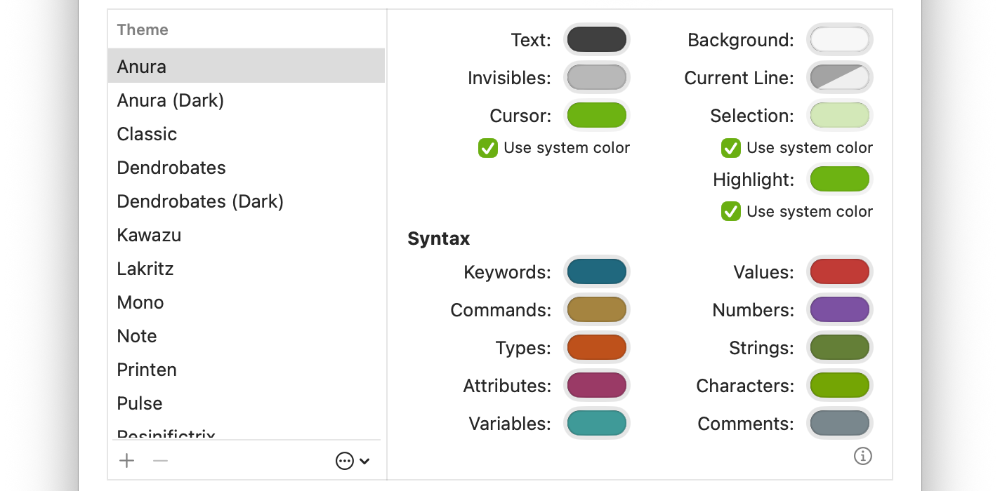

A CotEditor theme is a collection of settings that define the editor’s color appearance. You can choose your preferred color scheme, switch themes based on the window appearance, and export them as portable settings.

CotEditor themes let you configure the colors used for elements that compose the editor view.
Item
System Color
Opacity
Description
Text
The basic text color used for non-highlighted text. Line numbers also use this color.
The color of the cursor displayed at the insertion point.
Background
The background color of the editor.
Current Line
✔︎
The background color of the current line when the option to show the current line is enabled in Window settings.
Selection
✔︎
The background color of selected text.
Highlight
✔︎
The highlight color used, for example, when “Highlight instances of selected text” is turned on in Edit settings. A version of this color with reduced opacity is used as the base highlight background.
Some editor components, such as the cursor and selection, use system colors determined by macOS Appearance settings. When “Use system colors” is enabled in for an element, the system’s highlight color (System Settings > Appearance) is used instead of the theme’s own color.
Invisible characters, the cursor, the current line, and syntax highlighting can be assigned colors with opacity. However, opacity can’t be set for the basic text color or certain other elements. These components may adjust their opacity automatically based on the editor’s opacity and other conditions.
Customize a theme
Go to the CotEditor app on your Mac.
Choose CotEditor > Settings, then click Appearance.
Select the theme you want to customize from the Theme list.
To create a new theme, click the Add + button.
To create your own theme based on an existing one, click , then choose Duplicate.
Click a color well in the theme editor.
Select a color in the Colors window.
Your changes are saved automatically and applied immediately.
Switch theme based on the appearance
A pair of themes with the same name, where one ends with “ (Dark)” (note the space), automatically switches depending on the window’s appearance. The light-mode theme can be named either only with the base name or with “ (Light)” at the end. For example, the built-in “Anura” and “Anura (Dark)” themes form such a pair. “Anura” is used in light appearance, and “Anura (Dark)” is used in Dark Mode.
However, if you manually choose a theme that doesn’t match the appearance, that selection takes precedence regardless of the appearance.
Export a custom theme
Go to the CotEditor app on your Mac.
Choose CotEditor > Settings, then click Appearance.
Select the theme to export in the Theme list.
Do one of the following:
Click or open the contextual menu for the selected item, then choose Export.
Click or open the contextual menu for the selected item, choose Share, then choose how to share it.
Drag the selected item into the Finder.
Note: Only custom themes can be exported. Original built-in themes can’t be exported.
Tip: You can export all custom themes at once as a CotEditor Settings Archive. For details, see Export and import settings.
Import a custom theme
Go to the CotEditor app on your Mac.
Choose CotEditor > Settings, then click Appearance.
Do one of the following:
Click , choose Import, then choose a CotEditor Theme file to import.
Drag the CotEditor Theme file into the Theme list.
A CotEditor Theme file must have the .cottheme extension. Its format is based on JSON and uses hexadecimal color values with a # symbol.
 on your Mac.
on your Mac.